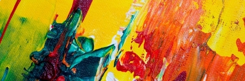
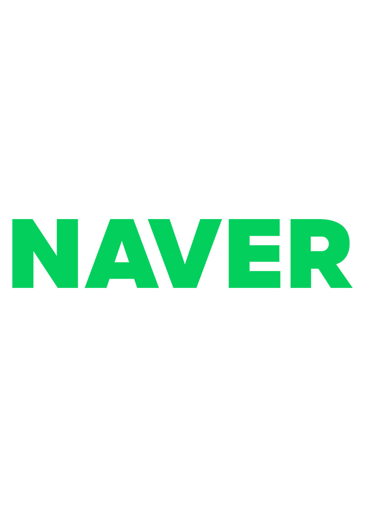

비주얼 영역
creative web
i'm ready

creative
web
publisher
i'm ready
소개 영역
'잘 만든 웹사이트를 만들고자 하는 욕심'
단순히 페이지를 구현하는 것에 그치는 것이 아니라 웹 표준, 웹 접근성, 그리고 웹 호환성 등을 고려하여 마크업 하는 웹 퍼블리셔가 되고자 합니다. 책임감을 가지고 임하며 맡은 바에 있어서 항상 최선을 다할 것을 약속드립니다.
my projects
-
CMG Digital
크로아티아의 광고 에이전시 CMG Digital 공식사이트를 클론 코딩 하였으며 반응형으로 제작하였습니다.
#SCSS #GSAP #Swiper #Responsive Web -
AirPods Max - Apple
애플 공식사이트 AirPods Max - Apple (KR) 를 클론 코딩 하였으며 PC 버전으로 제작하였습니다. 해상도는 1920 기준입니다.
#SCSS #GSAP #Swiper #PC -
W Concept
W컨셉 공식사이트를 클론 코딩하였으며 PC / Mobile 2가지 버전으로 제작한 적응형 웹사이트입니다.
#SCSS #Swiper #Adaptive Web -
Seoul City Hall
서울특별시청 공식사이트를 클론 코딩하였으며 키보드 접근성에 중점을 둔 PC 버전의 적응형 웹사이트입니다.
#Web Accessibility #Slick #Adaptive Web -

NAVER
네이버 공식사이트를 클론 코딩하였으며 시맨틱 마크업 구성에 중점을 둔 PC 버전의 적응형 웹사이트입니다.
#Web Accessibility #IR/IS #Adaptive Web